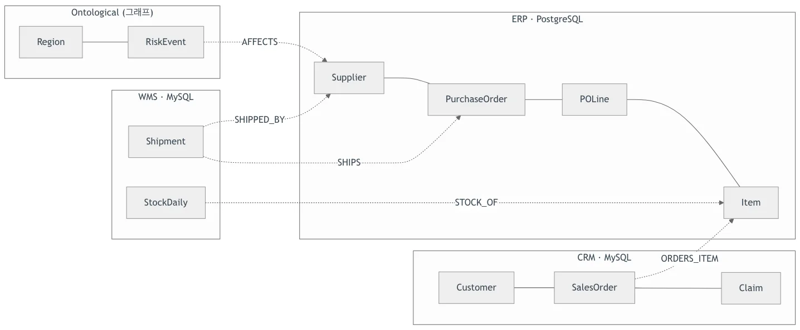
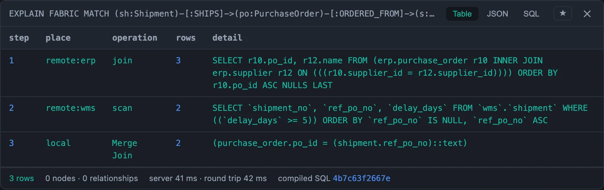

그래프 DB를 하나 더 세우지 않고, 데이터를 복사하지 않습니다
구매는 ERP에, 물류는 WMS에, 고객은 CRM에 있습니다. “동아시아에 리스크가 걸린 공급사의, 아직 도착하지 않은 선적은?” 같은 질문은
시스템 사이의 관계를 따라가야 답이 나옵니다. 그래서 흔히 그래프 데이터베이스를 따로 세우고 데이터를 ETL로 옮기는데,
그러면 서버와 권한을 두 벌로 관리하게 되고 복사본은 언제나 원천보다 늦습니다.
Ontological DB는 이미 쓰고 있는 PostgreSQL에 확장 하나로 그래프를 더합니다. 데이터는 Cypher로 묻고,
다른 데이터베이스의 테이블은 복사하지 않고 그래프의 노드로 선언해 질의하는 순간 원천에서 읽습니다.
권한·감사·과거 시점 조회는 데이터베이스가 직접 지키므로, 사람이 쓰든 AI 에이전트가 쓰든 같은 규칙이 적용됩니다.
데모 ① 흩어진 공급망 데이터를 복사 없이, Cypher 하나로 — 데이터소스 · 가상 노드 · 가상 관계 (2:23)
선언 셋, 질의 하나
외부 DB를 데이터소스로 등록하고, 테이블을 노드로, 시스템 사이의 키 대응을 관계로 한 번만 선언합니다. 그다음부터는 조인 조건을 적지 않아도 Cypher 패턴 하나가 여러 DB를 건넙니다.
CREATE DATASOURCE wms WITH ENGINE = 'mysql',
PARAMETERS = {host: '…', database: 'wms', password: $pw}
CREATE VIRTUAL NODE Shipment FROM wms.shipment KEY shipment_no
CREATE VIRTUAL RELATIONSHIP SHIPPED_BY
FROM Shipment(vendor_code) TO Supplier(supplier_id)
// 리스크는 그래프에, 공급사는 ERP에, 선적은 WMS에
MATCH (:Region {name: 'East Asia'})<-[:IN_REGION]-(e:RiskEvent)
-[:AFFECTS]->(s:Supplier)<-[:SHIPPED_BY]-(sh:Shipment)
WHERE sh.ship_status <> 'DELIVERED'
RETURN e.title, s.name, sh.shipment_no
그래프에 저장한 지식(리스크)과 원천 시스템의 행(공급사·선적)이 한 질의에서 섞입니다. 데이터는 한 행도 복사되지 않습니다.
2분 남짓의 데모 영상
빈 데이터베이스에서 시작해 포털 편집기에 실제로 입력하고 실행한 화면입니다. 설명은 화면 자막으로 들어 있습니다.
데모 ② 세 언어, 하나의 그래프 — OWL로 들어온 온톨로지를 Cypher와 TypeQL이 함께 읽고 씁니다 (2:55)
데모 ③ 시간 여행 — 같은 질의를 다섯 번, 시점만 바꿔 묻습니다 (2:16)
데모 ④ 내장 보안 — 같은 질의가 역할에 따라 다른 경로를 돌려줍니다 (2:38)
데모 ⑤ 스키마 진화 — 운영 중인 그래프에서 잘못된 타입을 고칩니다 (2:08)
데모 ⑥ 에이전트 인터페이스 — 스키마를 읽고, 틀리고, 고치는 과정 (2:02)
데모 ⑦ 벡터 검색 — 문서 검색이 놓친 답을 관계 검색이 찾습니다 (2:16)
주요 기능
애플리케이션이 따로 구현하던 일을 데이터베이스가 직접 합니다 — 기능마다 실제로 실행해 확인한 튜토리얼이 있습니다
동작 방식
새 서버가 아니라 PostgreSQL 확장입니다. 원천 데이터베이스에는 PostgreSQL의 외부 테이블(FDW)로 닿고, Cypher는 플래너가 비용을 매기는 SQL이 됩니다.
1. 설치
CREATE EXTENSION ontological. 그래프는 이 데이터베이스 안의 테이블과 인덱스입니다.2. 연결
CREATE DATASOURCE로 원천 DB를 등록합니다. 등록만 해도 원천의 테이블이 보이고, 데이터는 한 행도 옮기지 않습니다.3. 선언
4. 질의
5. 확인
EXPLAIN FABRIC을 붙이면 원천마다 실제로 보낸 SQL과 넘어온 행 수를 단계별로 보여 줍니다.6. 통제


EXPLAIN FABRIC — ERP는 발주와 공급사를 자기 안에서 조인했고, WMS는 지연 조건에 맞는 2행만 보냈습니다.그래프 DB를 따로 두는 방식과 무엇이 다른가
관계를 따라 묻기 위해 별도 그래프 데이터베이스를 세우고 업무 데이터를 ETL로 옮기는 구성과 비교했습니다.
| 구분 | 별도 그래프 DB + ETL 복제 | Ontological DB |
|---|---|---|
| 설치 · 운영 | 그래프 DB 서버를 따로 세우고 운영 | 쓰고 있는 PostgreSQL에 확장 하나 |
| 업무 데이터 | ETL로 복사 — 복사본은 원천보다 늦음 | 가상 노드로 질의하는 순간 원천에서 읽음, 복사 없음 |
| 시스템 사이의 조인 | 질의할 때마다 조인 조건을 다시 작성 | 가상 관계로 한 번 선언, 이후 모든 홉이 그 조인 |
| 권한 · 감사 | 그래프 DB와 원천에 각각 설정 | PostgreSQL 역할 · 행 수준 보안 · 감사 하나, 순회 도중에도 적용 |
| 과거 시점 조회 | 스냅샷이나 이력 테이블을 따로 설계 | 세션 시점만 바꾸면 같은 Cypher가 그때의 답 |
| 스키마 변경 | 마이그레이션 스크립트를 별도로 작성 | 계획 → 확장 → 이행 → 검증 → 축소, 서비스 중에 |
| 접속 방법 | 그래프 DB 전용 드라이버 | Neo4j 드라이버(Bolt)와 PostgreSQL 클라이언트 모두 |
현재 범위 — 원천 데이터베이스는 읽기 전용이며, 가상 관계의 가변 길이 순회(*1..n)는 아직 지원하지 않습니다.
Cypher의 UNION과 SPARQL도 아직입니다. 기능마다 되지 않는 것은 제품 문서에 함께 적어 두었습니다.
Ontological Studio
Ontological Studio에 들어 있습니다
Ontological DB는 데스크톱 앱 Ontological Studio의 엔진입니다. 설치 파일 하나에 PostgreSQL 16과 Ontological 확장, Bolt 게이트웨이, 포털이 함께 들어 있어 따로 설치하지 않고 바로 써 볼 수 있습니다.
데이터소스 탭에서 원천 DB를 연결해 가상 노드로 노출하고, 그 위에서 에이전트가 온톨로지를 만들고 근거와 함께 답합니다. 서버에 직접 설치하려면 GitHub의 소스를 받아 확장을 빌드합니다.

연관 솔루션
온톨로지를 만들고, 실행하고, 일에 씁니다
직접 돌려 보세요
Ontological DB는 Apache-2.0 오픈소스입니다. 기능마다 빈 데이터베이스에서 실제로 실행한 튜토리얼 일곱 편이 있습니다.
가장 빠른 길은 Ontological Studio를 설치하는 것입니다.